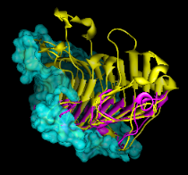

Clipping planes cut away parts of structures, surfaces, and objects. Chimera includes global and per-model clipping planes. Clipping plane status, locations, and orientations are included in saved positions and sessions. By default, clipped surfaces appear solid rather than hollow because planar caps are drawn where the surfaces are cut away. Cap appearance and whether caps are shown can be controlled using Surface Capping.
|
The global clipping planes affect all models and demarcate the front and back of the visible scene. The front (hither) and back (yon) global clipping planes are always perpendicular to the line of sight. They can be moved interactively in the Side View or adjusted with the commands clip, section, and thickness.
Global clipping is off by default, meaning that the planes are automatically adjusted to abut the bounding sphere of the displayed items. Turning on global clipping discontinues the automatic adjustment and allows items to become clipped. Global clipping can be turned on by:
Depth cueing is modulated by the positions of the global clipping planes.
|  |
A per-model clipping plane affects only a single model and can face in any direction. Since a molecular surface and its underlying structure are separate models, they can be clipped separately, as shown in the figure. Up to one plane per model can be activated and positioned with the Per-Model Clipping tool or the command mclip. All parts of a model to one side of its clipping plane can be shown, or just a slab of specified thickness.